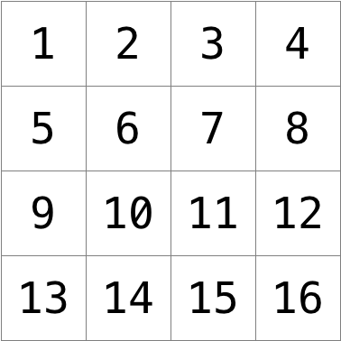

滤镜

要解决的问题
Perhaps the simplest way to represent an image is with a grid of pixels (i.e., dots), each of which can be of a different color. For black-and-white images, we thus need 1 bit per pixel, as 0 could represent black and 1 could represent white, 如下图所示.

In this sense, then, is an image just a bitmap (i.e., a map of bits). For 更多 colorful images, you simply need 更多 bits per pixel. 一份 file format (like BMP, JPEG, or PNG) that supports “24-bit color” uses 24 bits per pixel. (BMP actually supports 1-, 4-, 8-, 16-, 24-, and 32-bit color.)
一份 24-bit BMP uses 8 bits to signify the amount of red in a pixel’s color, 8 bits to signify the amount of green in a pixel’s color, and 8 bits to signify the amount of blue in a pixel’s color. If you’ve ever heard of RGB color, well, there you have it: red, green, blue.
If the R, G, and B values of some pixel in a BMP are, say, 0xff, 0x00, and 0x00 in hexadecimal, that pixel is purely red, as 0xff (otherwise known as 255 in decimal) implies “a lot of red,” while 0x00 and 0x00 imply “no green” and “no blue,” respectively. In this problem, you’ll manipulate these R, G, and B values of individual pixels, ultimately creating your very own image filters.
In 名为 helpers.c in 的文件夹中名为 filter-less, 编写一个 program to apply filters to BMPs.
演示
Distribution Code
For this problem, you’ll extend the functionality of code provided to you by CS50’s 工作人员.
下载 the 分发代码
Log into cs50.dev, click on your terminal window, and execute cd by itself. 你应该 find that your terminal window’s prompt resembles the below:
$
下一页 execute
wget https://cdn.cs50.net/2023/fall/psets/4/filter-less.zip
in order to 下载 a ZIP called filter-less.zip into your codespace.
Then execute
unzip filter-less.zip
to create 的文件夹中名为 filter-less. You 不再 need the ZIP file, so you can execute
rm filter-less.zip
and respond with “y” followed by Enter at the prompt to remove the ZIP file you downloaded.
Now type
cd filter-less
followed by Enter to move自己 into (i.e., 打开) that directory. Your prompt should now resemble the below.
filter-less/ $
Execute ls by itself, and you should see a few files: bmp.h, filter.c, helpers.h, helpers.c, and Makefile. 你应该 also see a folder, images/, with four BMP files. If you run into any trouble, follow these same steps again and see if you can determine where you went wrong!
背景
一份 Bit(map) 更多 Technical
回忆一下 a file is just a sequence of bits, arranged in some fashion. 一份 24-bit BMP file, then, is essentially just a sequence of bits, (almost) every 24 of which happen to represent some pixel’s color. But a BMP file also contains some “metadata,” information like an image’s height and width. That metadata is stored at the beginning of the file in the form of two数据结构 generally referred to as “headers,” not to be confused with C’s header files. (Incidentally, these headers have evolved over时间。 This problem uses the latest version of Microsoft’s BMP format, 4.0, which debuted with Windows 95.)
The first of these headers, called BITMAPFILEHEADER, is 14 bytes long. (回忆一下 1 byte equals 8 bits.) The second of these headers, called BITMAPINFOHEADER, is 40 bytes long. Immediately following these headers is the actual bitmap: an array of bytes, triples of which represent a pixel’s color. However, BMP stores these triples backwards (i.e., as BGR), with 8 bits for blue, followed by 8 bits for green, followed by 8 bits for red. (Some BMPs also store the entire bitmap backwards, with an image’s top row at the end of the BMP file. But we’ve stored this 问题集’s BMPs as described herein, with each bitmap’s top row first and bottom row last.) 换句话说, were we to convert the 1-bit smiley above to a 24-bit smiley, substituting red for black, a 24-bit BMP would store this bitmap as follows, where 0000ff signifies red and ffffff signifies white; we’ve highlighted in red all instances of 0000ff.

Because we’ve presented these bits from left to right, top to bottom, in 8 columns, you can actually see the red smiley if you take a step 返回.
To be clear, recall that a hexadecimal digit represents 4 bits. Accordingly, ffffff in hexadecimal actually signifies 111111111111111111111111 in binary.
注意 you could represent a bitmap as a 2-dimensional array of pixels: where the image is an array of rows, each row is an array of pixels. Indeed, that’s how we’ve chosen to represent bitmap images in this problem.
Image Filtering
什么是 it even 意思 to 滤镜 an image? You can think of filtering an image as taking the pixels of some original image, and modifying each pixel 在这种 a way that a particular effect is apparent in the resulting image.
Understanding
Let’s now take a look at some of the files provided to you as 分发代码 to get an understanding for what’s inside of them.
bmp.h
打开 up bmp.h (as by double-clicking on it in the file browser) and have a look.
You’ll see definitions of the headers we’ve mentioned (BITMAPINFOHEADER and BITMAPFILEHEADER). In addition, that file defines BYTE, DWORD, LONG, and WORD, data types normally found in 世界各地 of Windows 编程. Notice how they’re just aliases for primitives with which you are (hopefully) already familiar. It appears that BITMAPFILEHEADER and BITMAPINFOHEADER make use of these types.
Perhaps most importantly for you, this file also defines a struct called RGBTRIPLE that, quite simply, “encapsulates” three bytes: one blue, one green, and one red (the order, recall, in which we expect 查找 RGB triples actually on disk).
Why are these structs useful? Well, recall that a file is just a sequence of bytes (or, ultimately, bits) on disk. But those bytes are generally ordered 在这种 a way that the first few represent something, the 下一页 few represent something else, and so on. “File formats” exist because 世界各地 has standardized what bytes 意思 what. Now, we could just 阅读 a file from disk into RAM as one big array of bytes. And we could just remember that the byte at array[i] represents one thing, while the byte at array[j] represents another. But why not give some of those bytes names so that we can retrieve them from 内存 更多 easily? That’s precisely what the structs in bmp.h allow us to do. Rather than think of some file as one long sequence of bytes, we can instead think of it as a sequence of structs.
filter.c
Now, let’s 打开 up filter.c. This file has been written already for you, but there are a couple important points worth noting here.
First, notice the definition of filters on line 10. That string tells the program what the allowable 命令行参数s to the program are: b, g, r, and s. Each of them specifies a different 滤镜 that we might apply to our images: blur, grayscale, reflection, and sepia.
The 下一页 several lines 打开 up an image file, make sure it’s indeed a BMP file, and 阅读 all of the pixel information into a 2D array called image.
Scroll down to the switch statement that begins on line 101. 注意, depending on what filter we’ve chosen, a different function is called: if the user chooses 滤镜 b, the program calls the blur function; if g, then grayscale is called; if r, then reflect is called; and if s, then sepia is called. Notice, too, that each of these functions take as arguments the height of the image, the width of the image, and the 2D array of pixels.
These are the functions you’ll (soon!) implement. As you might imagine, the goal is for each of these functions to edit the 2D array of pixels 在这种 a way that the desired 滤镜 is applied to the image.
The remaining lines of the program take the resulting image and write them out to a new image file.
helpers.h
下一页, take a look at helpers.h. This file is quite short, and just provides the function prototypes 的 functions you saw earlier.
Here, take 笔记 of the fact that each function takes a 2D array called image as an argument, where image is an array of height many rows, and each row is itself another array of width many RGBTRIPLEs. So if image represents the whole picture, then image[0] represents the first row, and image[0][0] represents the pixel in the upper-left corner of the image.
helpers.c
Now, 打开 up helpers.c. Here’s where the implementation of the functions declared in helpers.h belong. But请注意，, right now, the implementations are missing! This part is up to you.
Makefile
Finally, let’s look at Makefile. This file specifies what should happen when we run a terminal command like make filter. Whereas programs you可能有 written before were confined to just one file, filter seems to use multiple files: filter.c and helpers.c. So we’ll need to tell make how to compile this file.
Try compiling filter for自己 by going to your terminal and running
$ make filter
Then, you can run the program by running:
$ ./filter -g images/yard.bmp out.bmp
which takes the image at images/yard.bmp, and generates a new image called out.bmp after running the pixels through the grayscale function. grayscale doesn’t do anything just yet, though, so the output image should look the same as the original yard.
规格说明
Implement the functions in helpers.c such that a user can apply grayscale, sepia, reflection, or blur filters to their images.
- The function
grayscaleshould take an image and turn it into a black-and-white version of the same image. - The function
sepiashould take an image and turn it into a sepia version of the same image. - The
reflectfunction should take an image and reflect it horizontally. - Finally, the
blurfunction should take an image and turn it into a box-blurred version of the same image.
你应该 not modify any of the function signatures, nor should you modify any other files other than helpers.c.
提示
Click the below toggles to 阅读 some advice!
Implement grayscale
One common 滤镜 is the “grayscale” 滤镜, where we take an image and want to convert it to black-and-white. How does that work?
- 回忆一下 if the red, green, and blue values are all set to
0x00(hexadecimal for0), then the pixel is black. And if all values are set to0xff(hexadecimal for255), then the pixel is white. So long as the red, green, and blue values are all equal, the result will be varying shades of gray along the black-white spectrum, with higher values 意思ing lighter shades (closer to white) and lower values 意思ing darker shades (closer to black). - So to convert a pixel to grayscale, you just need to make sure the red, green, and blue values are all the same value. But how do you know what value to make them? Well, it’s probably reasonable to expect that if the original red, green, and blue values were all pretty high, then the new value should also be pretty high. And if the original values were all low, then the new value should also be low.
- In fact, to ensure each pixel of the new image still has the same general brightness or darkness as the old image, you can take the average of the red, green, and blue values to determine what shade of grey to make the new pixel.
If you apply the above algorithm to each pixel in the image, the result will be an image converted to grayscale. Write some pseudocode to help you solve this problem.
void grayscale(int height, int width, RGBTRIPLE image[height][width])
{
// Loop over all pixels
// Take average of red, green, and blue
// Update pixel values
}
First, how might you loop over all pixels? 回忆一下 the image’s pixels are stored in the two-dimensional array, image. To iterate over a two-dimensional array, you’ll need two loops, one nested inside the other.
void grayscale(int height, int width, RGBTRIPLE image[height][width])
{
// Loop over all pixels
for (int i = 0; i < height; i++)
{
for (int j = 0; j < width; j++)
{
// Take average of red, green, and blue
// Update pixel values
}
}
}
Now, you can use image[i][j] to access any individual pixel of the image. But how to take the average of the red, green, and blue elements? Recall each element of image is an RGBTRIPLE, which is the struct defined in bmp.h to represent a pixel. The usual syntax to access members of a struct applies, wherein image[i][j].rgbtRed will give you access to the RGBTRIPLE’s red value, image[i][j].rgbtGreen will give you access to its green value, and so on.
When you compute the average, keep in mind the values of a pixel’s rgbtRed, rgbtGreen, and rgbtBlue components are all integers. So be sure to round any floating-point numbers to the nearest integer when assigning them to a pixel value! And why might you want to divide the sum of these integers by 3.0 and not 3?
Once you’ve averaged the pixel’s red, green, and blue values into a resulting grayscale color, go ahead and update the pixel’s red, green, and blue values. By now, you’re already acquainted with the syntax for 作业!
Implement sepia
Most image editing programs support a “sepia” 滤镜, which gives images an old-timey feel by making the whole image look a bit reddish-brown.
- An image can be converted to sepia by taking each pixel, and computing new red, green, and blue values based on the original values of the three.
- There are a number of 算法 for converting an image to sepia, but for this problem, we’ll ask you to use the following algorithm. For each pixel, the sepia color values should be calculated based on the original color values per the below.
sepiaRed = .393 * originalRed + .769 * originalGreen + .189 * originalBlue sepiaGreen = .349 * originalRed + .686 * originalGreen + .168 * originalBlue sepiaBlue = .272 * originalRed + .534 * originalGreen + .131 * originalBlue - Of 课程, the result of each of these formulas可能不是 an integer, but each value could be rounded to the nearest integer. It’s also possible that the result of the formula is a number greater than 255, the maximum value for an 8-bit color value. In that case, the red, green, and blue values should be capped at 255. As a result, we can guarantee that the resulting red, green, and blue values will be whole numbers between 0 and 255, inclusive.
Write some pseudocode to help you solve this problem and recall the use of nested for loops to visit every pixel.
void sepia(int height, int width, RGBTRIPLE image[height][width])
{
// Loop over all pixels
for (int i = 0; i < height; i++)
{
for (int j = 0; j < width; j++)
{
// Compute sepia values
// Update pixel with sepia values
}
}
}
To compute the sepia values, revisit the above bullets. You have a formula to compute the sepia values, but there are still a few catches. In particular, you’ll need to…
- Round the result of each computation to the nearest integer
- Ensure the resulting value is no larger than 255
How might a function that returns the lesser of two integers come in handy while implementing sepia, particularly when you need to make sure a color’s value is no higher than 255? You’re 欢迎, but not 必需, to 编写一个 helper function of your own to do just that!
Implement reflect
Some filters might also move pixels around. Reflecting an image, 例如, is a 滤镜 where the resulting image is what you would get by placing the original image in front of a mirror.
- Any pixels on the left side of the image should end up on the right, and vice versa.
- 笔记 that all of the original pixels of the original image will still be present in the reflected image, it’s just that those pixels可能有 been rearranged to be in a different place in the image.
In the reflect function, then, you’ll need to swap the values of pixels on opposite sides of a row. Write some pseudocode to help you get started:
void reflect(int height, int width, RGBTRIPLE image[height][width])
{
// Loop over all pixels
for (int i = 0; i < height; i++)
{
for (int j = 0; j < width; j++)
{
// Swap pixels
}
}
}
Recall from课 how we implemented swapping two values with a temporary variable. No need to use a separate function for swapping unless you would like to!
And now’s a good时间 to think 关于 your nested for loops. The outer for loop iterates over every row, while the inner for loop iterates over every pixel in that row. To successfully reflect a row, though, need you iterate over every pixel in it?
Implement blur
There are a number of ways to create the effect of blurring or softening an image. For this problem, we’ll use the “box blur,” which works by taking each pixel and, for each color value, giving it a new value by averaging the color values of neighboring pixels.
-
考虑 following grid of pixels, where we’ve numbered each pixel.

- The new value of each pixel would be the average of the values of all of the pixels that are within 1 row and column of the original pixel (forming a 3x3 box). 例如, each of the color values for pixel 6 would be obtained by averaging the original color values of pixels 1, 2, 3, 5, 6, 7, 9, 10, and 11 (笔记 that pixel 6 itself is included in the average). Likewise, the color values for pixel 11 would be be obtained by averaging the color values of pixels 6, 7, 8, 10, 11, 12, 14, 15 and 16.
- For a pixel along the edge or corner, like pixel 15, we would still look for all pixels within 1 row and column: in this case, pixels 10, 11, 12, 14, 15, and 16.
When implementing the blur function, you might find that blurring one pixel ends up affecting the blur of another pixel. It might be best to 创建一个 copy of image by declaring a new, two-dimensional array with code like RGBTRIPLE copy[height][width];. Then copy image into copy, pixel by pixel, with nested for loops, like so:
void blur(int height, int width, RGBTRIPLE image[height][width])
{
// Create a copy of image
RGBTRIPLE copy[height][width];
for (int i = 0; i < height; i++)
{
for (int j = 0; j < width; j++)
{
copy[i][j] = image[i][j];
}
}
}
Now, you can 阅读 pixels’ colors from copy but write (i.e., change) pixels’ colors in image!
演练
请注意，re are 5视频 in this playlist.
如何测试
请务必 test all of your filters on the sample bitmap files provided!
Correctness
check50 cs50/problems/2024/x/filter/less
Style
style50 helpers.c
如何提交
submit50 cs50/problems/2024/x/filter/less